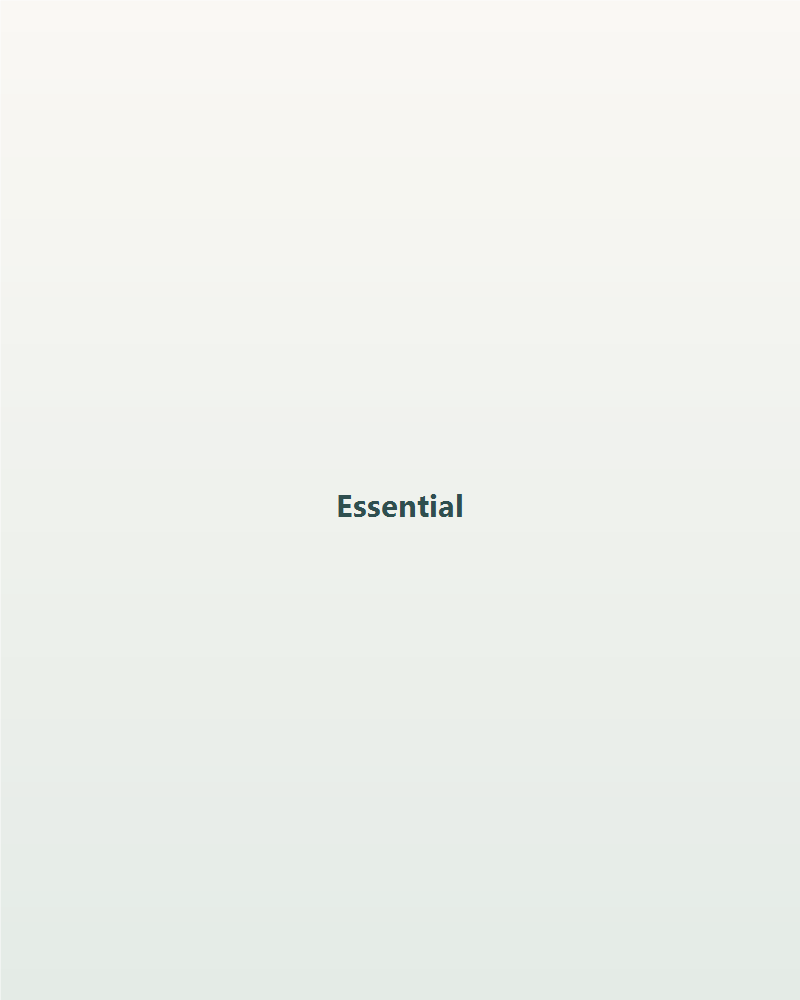
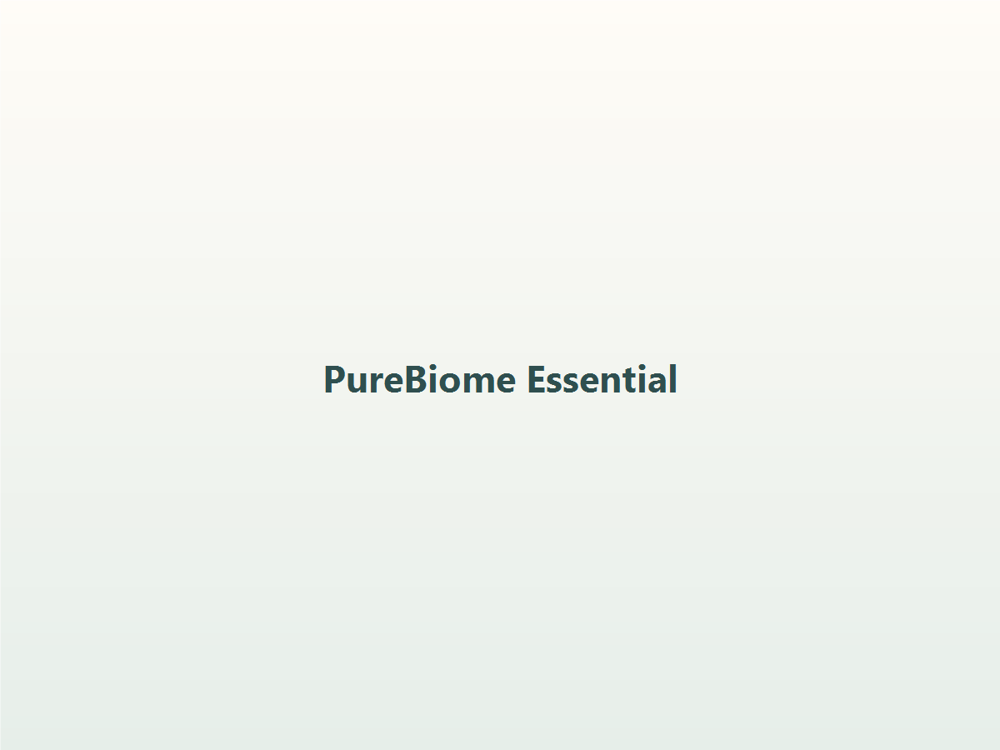
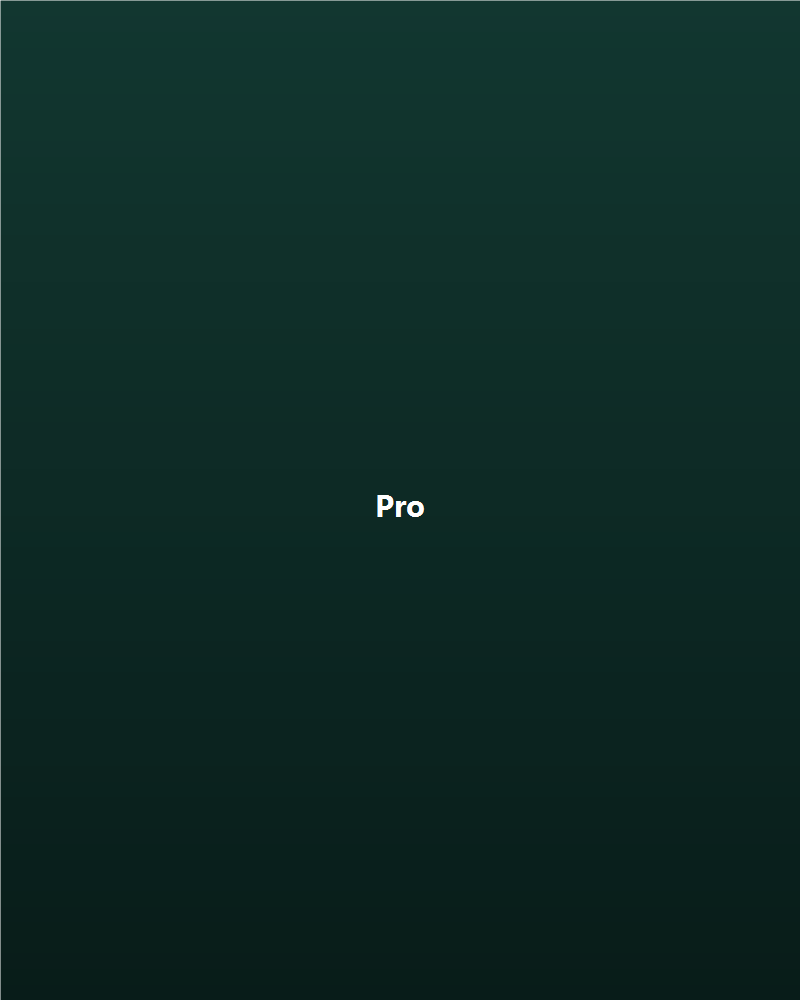

Essential
Virgin sugarcane prebiotic fibre — berry, orange, or neutral. Easy daily sachets and at-home tubs.
- Nourishes the microbiome
- Digestive regularity
- Convenient on-the-go sachets
PureBiome · purebio.me · Australia
Foundational fibre nutrition for everyday microbiome care — Australian made, Monash Low FODMAP certified, and built to fit real mornings. Start with the starter kit, then make it a daily ritual.
30-day money-back guarantee · Subscribe & save available in Australia

Daily ritual
Prebiotic fibre that fits real life
Your PureBiome starter
One straightforward bundle — Essential prebiotic fibre plus the extras that make consistency easy. Pricing below is illustrative until the store goes live; final totals are confirmed at checkout.
* Launch pricing and currency confirmed at checkout. International orders may display in local currency.
90-day money-back guarantee · Update or cancel anytime · No lock-in gimmicks
Two lines, one purpose
Essential nourishes everyday microbiome support. Pro pairs prebiotics with probiotics for targeted dietary relief — co-designed with specialist dietitians.

Virgin sugarcane prebiotic fibre — berry, orange, or neutral. Easy daily sachets and at-home tubs.

Prebiotic + probiotic blends for dietary constipation support and indigestion & bloating — natural flavours, evidence-led.
Ready to make it routine?
Get PureBiomeScience you can cite
PureBiome builds on cellulosic prebiotic research — fibre that feeds beneficial bacteria without the noise. Every claim is grounded in transparent formulation and real-world digestive outcomes.
“I recommend this approach to my patients; it is Monash University low FODMAP certified, but more importantly, it works. Improving regularity and gut microbiome helps people feel better and tolerate more variety with food — and more variety is always a good thing.”
30-day money-back guarantee — Try your starter kit. If it is not a fit, we will make it right.
Get PureBiomeReal voices
What customers say — Australian voices first; we are expanding proof as we grow internationally.
“Since starting this fibre over two to three weeks I’ve been regular for the first time in years — and I stay fuller for longer.”
“Only supplement I will ever use. My physical and mental health is so much better. I’ve been recommending it to everyone.”
“Within three days I had no indigestion or reflux symptoms. I take it every morning without fail.”
This marketing preview is built for a two-click path: Get PureBiome (pre-filled cart) → pay with Shop Pay, Stripe Link, or your wallet.
Wire your store URL in main.js when ready.